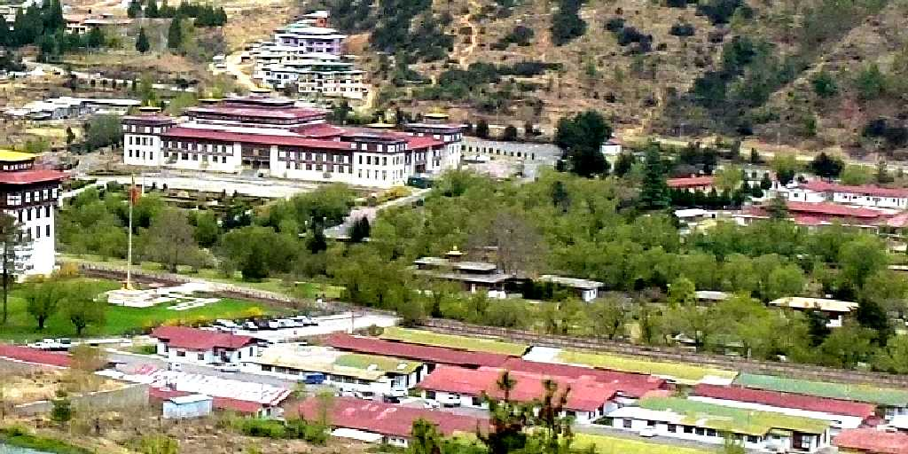
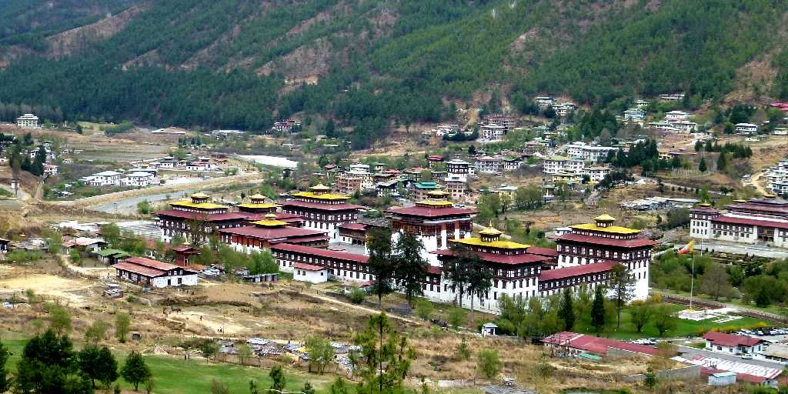
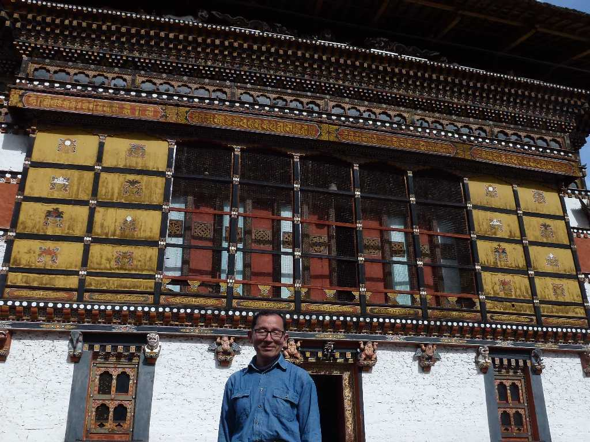
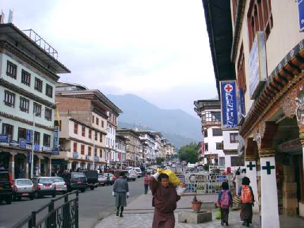
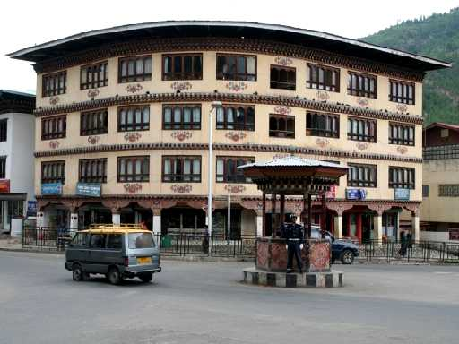

Parliament Royal Place Thimphu
ワンチェク国王の王宮(中央)と国会議事堂(左上)

Tashichho Dzong Thimphu
ティンプーはブータンの政治と宗教の中心地でタシチョゾンは国王の部屋と官庁およびブータン仏教界の総本山がある

April 7 2012 Tashichho Dzong
昔は城の役割を果たしたゾンには官庁と僧院がありこのタシチョゾンには新旧国王の執務室とジェケンポ大僧正の執務室がある
 
Downtown Thimphu
インド西ベンガル州から陸路ブータンに入国し西から東に横断する１,５００ｋｍバスの旅 西ブータンの首都ティンプーから国道１号線で中央ブータンのジャカルを通り東ブータンの中心地タシガンまで トンネルの無い標高２～３千メートル付近の九十九折の山道を走りインドアッサム州へ陸路ブータンを出国する